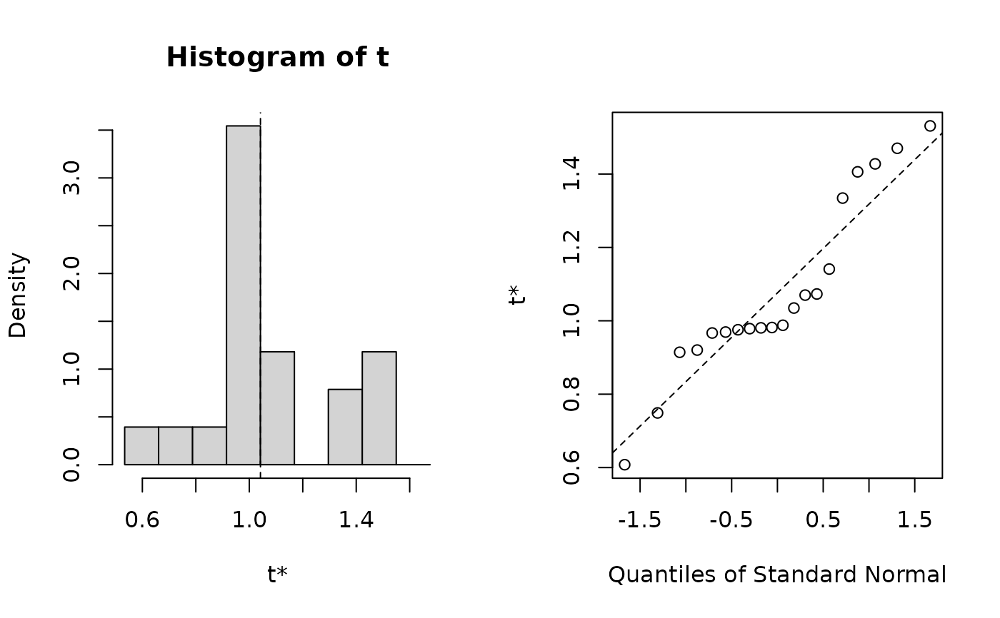

Given an internal mirt object estimate the bootstrapped standard errors. It may
be beneficial to run the computations using multi-core architecture (e.g., the parallel
package). Parameters are organized from the freely estimated values in mod2values(x)
(equality constraints will also be returned in the bootstrapped estimates).
boot.mirt(x, R = 100, boot.fun = NULL, technical = NULL, ...)an estimated model object
number of draws to use (passed to the boot() function)
a user-defined function used to extract the information from the bootstrap
fitted models. Must be of the form boot.fun(x), where x is the
bootstrap fitted model under investigation, and the return must be a numeric vector. If
omitted a default function will be defined internally that returns the estimated
parameters from the mod object, resulting in bootstrapped parameter estimate
results
technical arguments passed to estimation engine. See mirt
for details
additional arguments to be passed on to boot(...) and mirt's
estimation engine
Chalmers, R., P. (2012). mirt: A Multidimensional Item Response Theory Package for the R Environment. Journal of Statistical Software, 48(6), 1-29. doi:10.18637/jss.v048.i06
# \donttest{
# standard
mod <- mirt(Science, 1)
booted <- boot.mirt(mod, R=20)
plot(booted)

booted
#>
#> ORDINARY NONPARAMETRIC BOOTSTRAP
#>
#>
#> Call:
#> boot.mirt(x = mod, R = 20)
#>
#>
#> Bootstrap Statistics :
#> original bias std. error
#> t1* 1.0417547 0.057453085 0.1853378
#> t2* 4.8641542 0.117409179 0.3287895
#> t3* 2.6399417 0.028935069 0.2211631
#> t4* -1.4660135 -0.043036416 0.1675969
#> t5* 1.2259618 0.016325124 0.2007617
#> t6* 2.9240027 0.061362253 0.2932473
#> t7* 0.9011651 0.015719572 0.1713621
#> t8* -2.2665647 -0.022291010 0.2486331
#> t9* 2.2933717 0.046506742 0.5424316
#> t10* 5.2339928 0.122452084 1.0286184
#> t11* 2.2137728 -0.006343118 0.4155776
#> t12* -1.9637062 -0.060291592 0.3678867
#> t13* 1.0949151 0.034361158 0.2454328
#> t14* 3.3479196 0.028974417 0.3012493
#> t15* 0.9916289 -0.033491971 0.1514729
#> t16* -1.6882599 -0.030078767 0.1980832
#run in parallel using snow back-end using all available cores
mod <- mirt(Science, 1)
booted <- boot.mirt(mod, parallel = 'snow', ncpus = parallel::detectCores())
booted
#>
#> ORDINARY NONPARAMETRIC BOOTSTRAP
#>
#>
#> Call:
#> boot.mirt(x = mod, parallel = "snow", ncpus = parallel::detectCores())
#>
#>
#> Bootstrap Statistics :
#> original bias std. error
#> t1* 1.0417547 0.043813843 0.2412273
#> t2* 4.8641542 0.195389942 0.5566439
#> t3* 2.6399417 0.050127490 0.2706744
#> t4* -1.4660135 -0.035475773 0.1679960
#> t5* 1.2259618 -0.003908781 0.1978620
#> t6* 2.9240027 0.048165349 0.2248971
#> t7* 0.9011651 0.001902018 0.1495929
#> t8* -2.2665647 -0.016643178 0.2090448
#> t9* 2.2933717 0.055942237 0.6631287
#> t10* 5.2339928 0.160157494 1.0606722
#> t11* 2.2137728 0.012249989 0.4194951
#> t12* -1.9637062 -0.076833875 0.4121066
#> t13* 1.0949151 0.068956104 0.2449640
#> t14* 3.3479196 0.095617953 0.3075003
#> t15* 0.9916289 0.031321499 0.1567300
#> t16* -1.6882599 -0.066492471 0.2023222
####
# bootstrapped CIs for standardized factor loadings
boot.fun <- function(mod){
so <- summary(mod, verbose=FALSE)
as.vector(so$rotF)
}
# test to see if it works before running
boot.fun(mod)
#> [1] 0.5220496 0.5844686 0.8030199 0.5410276
# run
booted.loads <- boot.mirt(mod, boot.fun=boot.fun)
booted.loads
#>
#> ORDINARY NONPARAMETRIC BOOTSTRAP
#>
#>
#> Call:
#> boot.mirt(x = mod, boot.fun = boot.fun)
#>
#>
#> Bootstrap Statistics :
#> original bias std. error
#> t1* 0.5220496 0.002344347 0.08867253
#> t2* 0.5844686 -0.003216162 0.06017769
#> t3* 0.8030199 0.007693533 0.07162299
#> t4* 0.5410276 0.003008830 0.07553746
# }